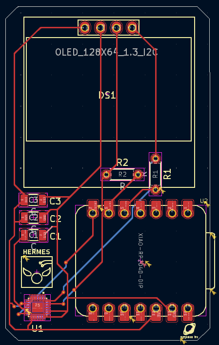
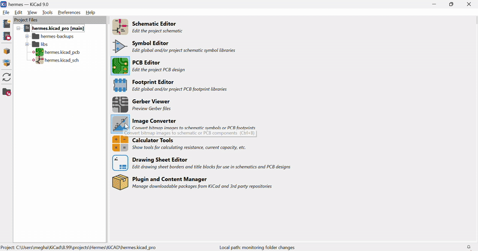

Now for the easy part. You've already learned how to do basic routing from the Pathfinder video I made. And routing your Hermes board shouldn't be that different. Follow your ratlines, use vias (appropriately, I shouldn't see 20 vias on your PCB), and add fun silkscreen to make your PCB look awesome.
Make sure to run DRC often to make sure you're on the right track! (Tools -> Design Rules Checker)


When you're finishing up your placement and routing, make sure to put the Hermes logo on your PCB's silkscreen (along with you and your board's name). You can find the Hermes logo here.
Download it and open KiCAD's image converter to convert it to a silkscreen footprint. You'll probably have to change the size of the image to fit your configuration.
STOP! Checkpoint! After you're done routing, post a screenshot of your PCB design in #pathfinder. This is so I can make sure people are on the right track (and that you don't have any glaring issues)